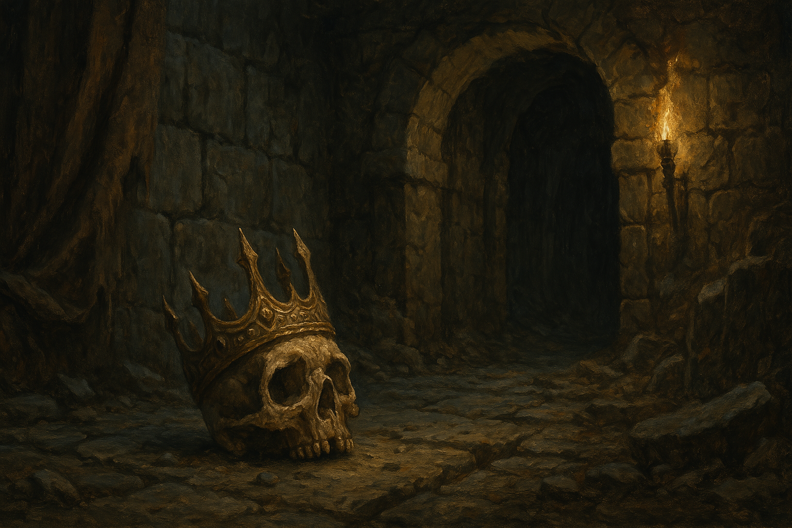

Chapter 1: Aberration 101
The Cave of Drogsland

The Cave of Drogsland
15051.05.09
在異變的母親大人消滅 Lott 和芒果蛛以外的其他夥伴後，Lott 渡過了十分煎熬的兩年。在這兩年間，他也逐漸從自我墮落中慢慢恢復，為了生存，接了獨立傭兵的工作。
而在一次機會下，Lott 與 Marianne Jens 再次相會，Marianne 不忍心看見 Lott 這樣受苦。在 Marianne 的鼓勵下，Lott 開始接受多人傭兵團隊，也開始與社會慢慢接壤。
在這期間，Lott 開始認識了幾名較有默契的傭兵夥伴，包含半獸人 Psyber、牛頭人 Kudan，以及流漿怪 Ubbo-Sathla，並長期合作一起接任務。
這一次，冒險者們從一名神秘的委託人，接到了一個案子，賞金十分豐厚。委託人僅向 Lott 透露，請團隊到麥丁頓王國邊陲的 Drogsland（或是俗稱 Moorland Haunt），裡面的卓茲克別莊（Drogskol Manor）底下的洞窟，去拿一個王冠回來。
原本型態為鳥頭蜘蛛身體的芒果蛛，也在 Lott 的心境轉化下，改變型態為一條橘黃色的蛇，更名為芒果，收在 Lott 腰後的小包內。
冒險者們來到了 Drogsland 唯一的酒館，Silence（寂）。但與店名不同，裡面的氣氛十分活絡。老闆 Jacob 熱情的招呼冒險者們，並介紹了他的新婚妻子，Eva。Jacob 表示為了慶祝他們的新婚，這週酒館內的啤酒全部店家請客。
冒險者們點完餐後，Lott 向團隊簡單說明了這次任務的目標，並與 Jacob 詢問「卓茲克別莊」的位置。Jacob 簡單說明，路途並不複雜，從酒館走出後右轉，看到一間巫醫的診所後右轉，再走五分鐘左右就會到了。Lott 同時拿出了任務的目標：那張素描的王冠圖像，給其他冒險者們看。
聽見討論的內容，鄰桌一名獨行的帽兜客，GoR，豎起了耳朵。對他而言，卓茲克別莊的洞穴是他再熟悉不過的地方，畢竟近幾天，他每天都去那裡探險，與孽物打交道。因此對於這群新來的冒險者們，他格外放了點注意力。
吃飽後，冒險者們租了三樓的八人通鋪，簡單盥洗後便睡了。住在二樓的 GoR 讓身上其中一隻小孽物爬到通鋪的窗外監視冒險者們，卻沒有得到多少新的資訊；另外兩隻小孽物，則利用晚上時間先去了洞穴，嘗試捕捉更多孽物回來。
夜晚，冒險者們熟睡，但 GoR 做了一個夢。在夢中，他看見一頂做工精細的王冠，被緩緩帶上一顆頭顱，然後便是一聲尖叫嘩破他的夢境。
15051.05.10
一早，冒險者們來到酒館一樓用餐，繼續討論著關於任務的事。坐在後頭的 GoR 思索著如何加入話題，幾度造成了一點小尷尬。但最後在 Jacob 的協調下，GoR 答應擔任冒險者們的嚮導，帶他們去卓茲克別莊的洞穴內探險。
GoR 嘗試讓他身上的孽物和冒險者們交流，但對孽物有極大排斥的 Lott 對此非常反感，只能基於合作的關係，勉強接受。
冒險者與 GoR 出發，走到了巫醫的診所。在 GoR 的推薦下，冒險者們進到了診所內，決定採買一點補給品。巫醫 Dr. Crow 似乎是個德魯伊隱士，牆上用德魯伊語寫著各種零碎的隻字片語，就連懂德魯伊語的 Ubbo 也無法讀懂意思。在 Dr. Crow 的說明下，他表示這裡的人記憶都怪怪的，似乎在幾年前，曾經發生了一場怪物的襲擊，而他嘗試在自己想起來的時候，趕緊把關鍵字記下來，但還是無法完整拼湊在一起。同時，他也記得自己好像曾經養過一隻狗，但究竟是哪種品種，他也不記得了。
Lott 最終買了五罐藥水後，冒險者們和 GoR 就出發前往卓茲克別莊了。
來到別莊，冒險者們和 GoR 推開了門。左右兩側的花園，有著被砍斷的雕像，除了上面有 Drogskol 的字樣外，完全無法辨認。冒險者們和 GoR 決定再往內走，此時，Kudan 突然聽見腦內傳來一個年輕男子的聲音。聲音自稱是 Mikkel Drogskol 爵士，Drogskol 家族的最後一名成員。經過與 Mikkel 的對談，Kudan 得知當時 Drogskol 家是在睡夢中被滅門的，因此也不知道殺死他們的是誰。
GoR 和冒險者們說明，別莊內有八間房，但往地下的洞口會隨機出現在不同房間，因此冒險者們分別進入不同房間探索。最終，Ubbo 發現了洞口，冒險者們便依序進入洞內（用跳的、用繩索攀爬、用法術緩緩降落，各種不同方式）。
GoR 對這個洞穴已經有挺完整的瞭解，也畫了一張地圖。他把地圖拿出來分享給冒險者們看，並簡單說明他註記的圖例。冒險者們決定往其中一個方向走，然後看見了四隻盤旋在空間內的怪物。GoR 提醒他們，只要小心不要撞到他們，就沒事，結果好死不死，冒險者們與 GoR 五人，其中四人直接硬生生撞上了怪物。
在一場原本可避免的戰鬥中，冒險者們還算能應付敵人，但 GoR 明顯打得很吃力。在冒險者們的協助下，怪物終於被消滅了。